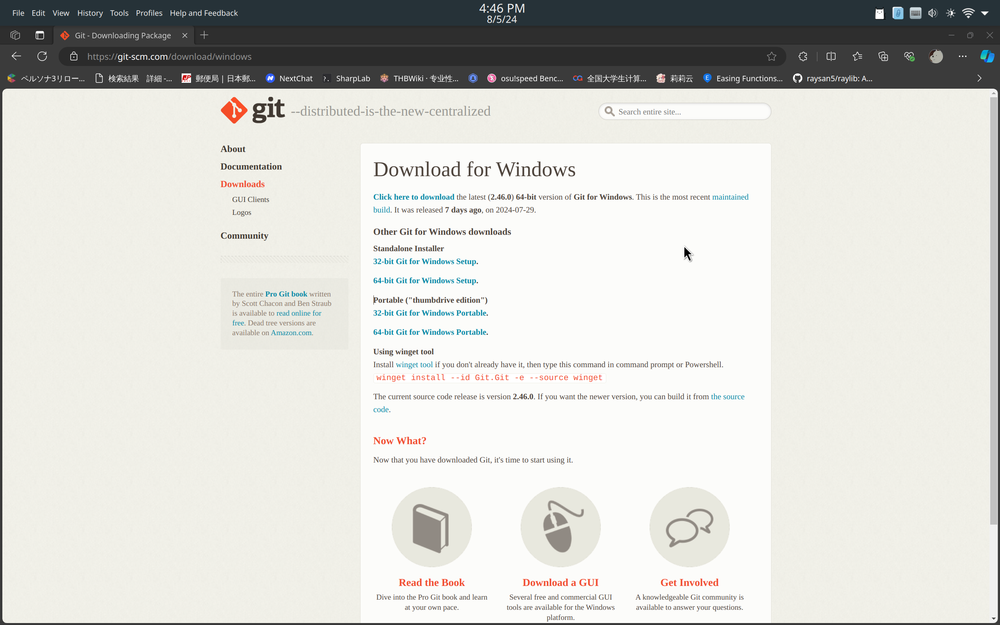
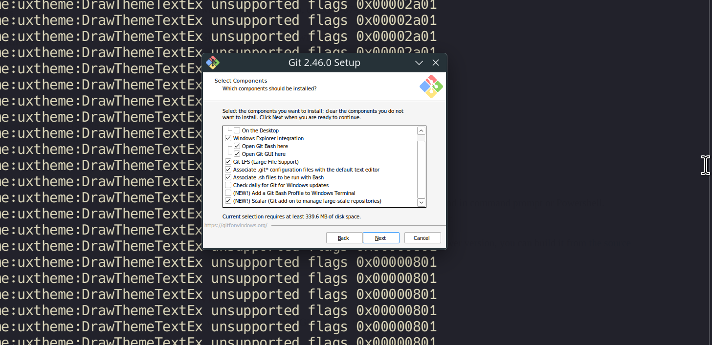
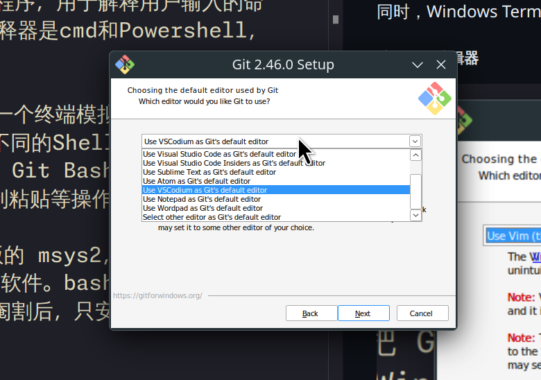
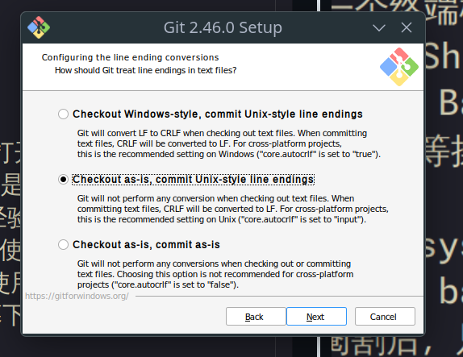
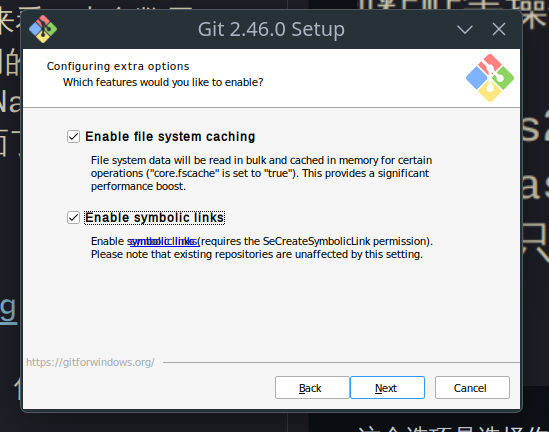
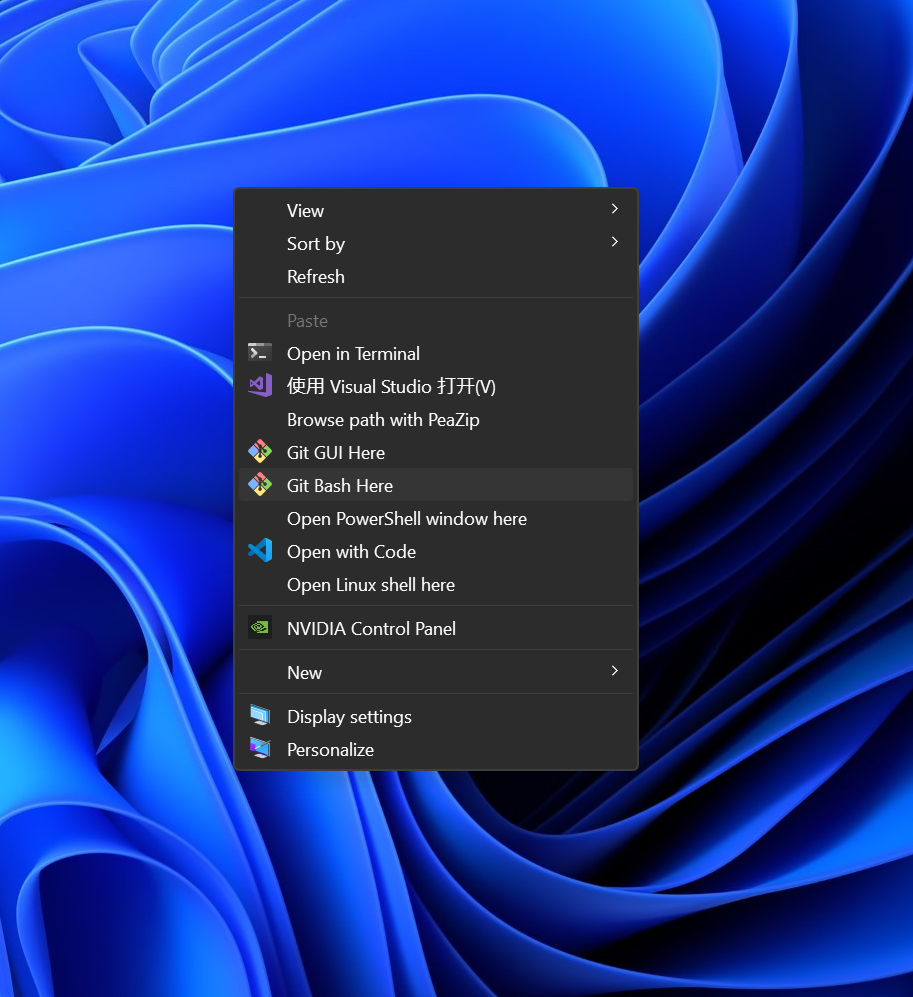

安装 Git
前文提到，Git可以在任何操作系统上运行。那么，本文将讲解在 Windows, Linux，以及 macOS 上如何安装 Git。
安装的部分大家跳转到适合自己操作系统的部分即可。
Windows
Windows 下安装Git稍微麻烦一些，因为Git本身是一个命令行工具，而Windows下的用户对命令行的使用并不是很熟悉，同时Windows下的命令行工具也跟垃圾一样难用。不过如果你会一点点命令行，并且有使用包管理器，你可以跳转到使用包管理器安装的部分。其他人就别看了，直接去手动安装部分吧。
需要说明的是，使用包管理器和手动安装，都是使用相同的软件来源，只是安装方式不同。因此效果是一样的。
使用包管理器
如果你有使用 winget 包管理器，那么安装 Git 就像和在 Linux 下安装软件一样简单。Windows下有很多种包管理器，下面介绍两种最常见的包管理器winget 和 scoop上安装Git。
使用 winget
使用以下命令安装 Git：
winget install --id Git.Git -e --source winget
使用 scoop
使用以下命令安装 Git：
scoop install git
手动安装
前往Git for Windows官网。你应该会看到和下图类似的页面：

现在，你需要根据你的机器选择合适的架构1。对于大多数电脑用户来说，尤其是对于 Windows 10及以上的用户，选择64-bit即可。这些操作系统都是64位的。只要你的电脑不是十几年前的，一般都是64位的。
不过，即使你不知道自己的电脑是什么架构，也不用担心。Git官网自动帮你检测了你的电脑架构，你只需要点击巨大的Download for Windows标题下的Click here to download超链接即可。
不同的架构使用不同的CPU指令集，因此选择错误的架构会导致Git无法运行。
下载完成后，双击下载的安装包，打开安装文件，你需要在下面几个页面注意一下选项，其他地方一路Next即可。一定要先看完再安装，不然后悔莫及。
我的图片是在Linux下使用Wine打开的，所以某些字体可能会有点问题，但是不影响理解。
添加 Git Bash 到 Windows Terminal

勾选倒数第二个选项(New) Add a Git Bash Profile to Windows Terminal。前面说过，Git 是一个命令行工具，而 Git Bash 是一个包含了Git的shell。这个选项会把 Git Bash 添加到 Windows Terminal 中，这样你就可以直接在 Windows Terminal 中使用 Git Bash 了。
Shell2 是一个命令行解释器，它是一个程序，用于解释用户输入的命令，并执行这些命令。Windows下的命令行解释器是cmd和Powershell，而Git Bash是一个基于bash的Shell。
我们使用 Windows Terminal 是因为它是一个终端模拟器，可以同时打开多个终端，而且可以在一个窗口中同时打开不同的Shell。这样，你就可以在一个窗口中同时使用cmd，Powershell，Git Bash等Shell了。同时，Windows Terminal也能更好地支持复制粘贴等操作。
更准确地说，Git Bash是一个阉割版的 msys2，msys2和cygwin都是在Windows上提供类Unix环境的软件。bash是Unix上最常用的Shell之一。所以，Git Bash就是一个阉割后，只安装了Git和bash的msys2。
选择默认编辑器

这个选项是选择你的默认编辑器。Git 会在一些情况下打开一个编辑器。大多数 Unix 用户都使用Vim/Neovim作为编辑器。但是，如果你不会/根本不知道Vim，请千万不要使用Vim。根据我的经验来看，大多数用户进入Vim后都不知道怎么退出。所以，请选择你在外部使用的编辑器，比如VS Code。如果没有，建议安装一个。实在不写可以使用Nano，这也是一个命令行的编辑器，但是它的操作都傻瓜式地写在屏幕下面了。
选择默认换行符

你可能听说过 Unix 系统使用\n作为换行符，Windows 使用\r\n作为换行符。这个选项就是选择你的默认换行符。请一定Checkout as-is, commit Unix-style line endings即可。这个选项会在你检出代码时，使用Unix风格的换行符，提交代码时，使用Unix风格的换行符。否则，你在提交代码的时候很可能产生一大堆更改，因为换行符不同。
启用软链接

把第二个选项Enable symbolic links勾选上。
软链接是一种特殊的文件，它指向另一个文件。软链接在Windows下叫做快捷方式。软链接在Unix下有两种，一种是符号链接，另一种是硬链接。符号链接是一种特殊的文件，它指向另一个文件。硬链接是一个文件的另一个名字。软链接在Windows下叫做快捷方式。这个选项是启用符号链接，这样你就可以在Git中使用软链接了。后面我们会稍微提到软链接，现在你你不许要知道这是什么。
接下来你就可以一路Next了。
安装完成后，在任意文件夹中按住shift，右键点击鼠标，你会看到在此处打开 Git Bash或者Open Git Bash here。点击这个选项，你就可以在当前文件夹中打开 Git Bash 了。

你也可以使用Windows Terminal，请先按照以下视频添加Git Bash的配置。
Linux
跳转到你的发行版的部分，按照你的发行版安装即可。
Arch Linux
sudo pacman -S git
Debian/Ubuntu
sudo apt install git
Fedora
sudo dnf install git
openSUSE
sudo zypper install git
Gentoo
自己编译去吧。
macOS
macOS 是基于 Unix 的操作系统，因此安装 Git 就像在 Linux 下安装软件一样简单。不过macOS不自带有包管理器，因此你需要自己安装一个包管理器。这里推荐使用 Homebrew。
使用 Homebrew
brew install git
结束
安装完成后，你可以打开终端，输入git --version，然后回车，看到类似以下输出，说明安装成功：
caiyi@archlinux ~> git --version
git version 2.45.2
下一讲，我们将讲解如何配置 Git，以及简要介绍命令行和shell的基本操作。